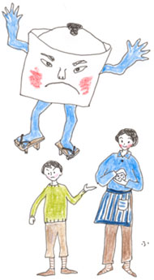
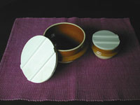

|
■妖怪ブンカナベ
年齢だろうか。なりゆきに任せるのが、少しだけうまくなった。
万事に力みがちな私は、過去、それが原因でまずいことにおちいることが少なくなかった。なりゆきに身を任せていると、たとえ少々まずいことが起きても、その時点で、またなりゆきが見えてくる。生き方としては消極的かもしれないが、こういうのを混ぜながらいかないと、息が切れる。
これは、なりゆき上５年という歳月を要した買いもののはなしである。
東京・品川駅に近い出版社で、予定より少し早く打ち合わせが終わった。
「とうとう、その日が来たみたい」
そう思った。
品川駅から京浜東北線に乗り、ふたつめの大森駅で降りる。ここから蒲田方面に7分ほど歩いた「ダイシン百貨店」に、私は行きたかったのだ。前もって電話をして、所在地と営業時間、定休日は確かめてある。でもわざわざということでなしに、いい日和がめぐったときに足をのばそうと決めていた。そこで買い求めるつもりの或るものが、ほんとうに必要かどうか思いめぐらすのに、時間をかけたいと思ったから。
結局、何年かけたことになるだろう、と私は指を折り折り、大森駅を背に歩きはじめた。池上通り添いの商店街のアーケードを、蒲田方面に向かっていることになる。いまにも降り出しそうな重たい雲が、空低くぶら下がっているような午後。そんな天気のせいかもしれなかったが、決してそのせいだけではない、そこは不思議の街だった。
商店街の横道から、何かがひょい、と飛び出してきそうな気配。うしろの方から、カツンカツンと下駄の音が聞こえて、私を追い越そうとしている。袖をかすめて行き過ぎたのは、派手な縞の模様のきものを着て、裾を思い切ってたくし上げた威勢のいい若い衆風。ふり返ったその顔が、亡くなった叔父の笑った顔だったなんていうことになりはしないかと、思っただけで動悸がして、思わずうつむく。だらしがないなあ、私ったら。しかし、しかし懐かし過ぎてこわいのだ。
や、や。こんどは向こうから、おばあさんがふたり、何やらひそひそ話し合いながら歩いてくる。見ると、同じ型、同じ模様のブラウスを着ている。おそろいのブラウス姿で遊びに出た女の子たちが、このアーケードの下を歩いているうちおばあさんになったんじゃあないでしょうねえ。と、疑いたくなるくらい、愛らしいふたり連れ。
乾豆を扱う店。洋品店。和菓子屋、洋菓子、八百屋に米屋。ほとんどが昔風の店構えだ。ところどころに割り込んだいま風の店が逆にやぼったく見えるのは、なぜなのだろう……。そんなことを考えるともなく考えながら、ダイシン百貨店にたどり着いた。
私は、ここに「文化鍋」を買いに来たのだ。
「文化鍋」とは？ 石油コンロが普及しはじめた昭和20年代半ば。吹きこぼれによる事故を防ぐためにアルミの鋳物鍋が誕生した。鍋のなかにふたを落としこむかたちで、ご飯を炊くとき、おネバが上がってきても、吹きこぼれない構造になっている。ご飯を炊くには、この鍋がもっとも適しているといわれる。
私もこの5年ほど、鍋でご飯を炊いている。電気炊飯器が壊れてしまったとき、さあ、これからは自分の火加減でご飯を炊くひとになろう、と思った。すぐにも文化鍋がほしかったけれども、鍋の数をふやすことにためらいを感じた。ほんとうに、ご飯をちゃんと炊けるようになるまで、それが暮らしに定着するまでは、持っている鍋のあれやこれやで炊くこととした。文化鍋のサイズがそろっているのは、大森の「ダイシン百貨店」、と道具に滅法くわしい友人に教えられ、買うのはそこと決まった。それにしても大森は、土地勘の働かぬ、縁うすい場所だった。
そんなこんなで、なりゆきに任せたら、5年が過ぎていた。そうして、やっと手に入れた文化鍋。このささやかな、しかしせつないほどのよろこびを、私は米を火にかけるたび、しばらくは噛みしめるだろう。
さて、不思議の街で求めただけのことはある。文化鍋は、妖気にも似た存在感を放ちながら、とんでもなく美味しいご飯を炊いてみせる。しかし、ひとたび気をゆるめ、たとえば、米やご飯をないがしろにしようものなら、いつ妖怪の姿に変わるかしれない。文化鍋が電気炊飯器とちがうのは、つまり、そういうところなのだと思う。
18センチの文化鍋。約3.5合炊き。4,250円也。

■とんでもなく美味しいご飯の炊き方
〈米をとぐ〉
●いちばん最初の水は、さっと入れて、さっと捨てる。米をしゃっしゃっととぐのは、水を切った状態で。4回ほど水をかえて、とぐ。
〈水加減〉
●水は、米の量の1割増し。好みのやわらかさにご飯が炊き上がる水加減に。
●30分ほど水につけたら、炊きはじめる。
〈炊く〉
●点火したら、沸騰するまで強火にする。
●沸騰したら、弱火にして15分（ここでタイマーをかけると便利）。
●火を消す前に、強火にする。このときの火加減で、好みのおこげもつくれる。
●12分ほど蒸らす。
※すぐに炊かない場合は、といだ米をザルに上げておきます（夏はザルに上げた上、冷蔵庫に入れる）。洗った米は、炊くときカップではかり、同量の水で炊く計算。
※初めてガスの上でご飯を炊いたとき、短い時間で炊けることに、驚きました。ひやご飯が美味しさという発見もありました。

|